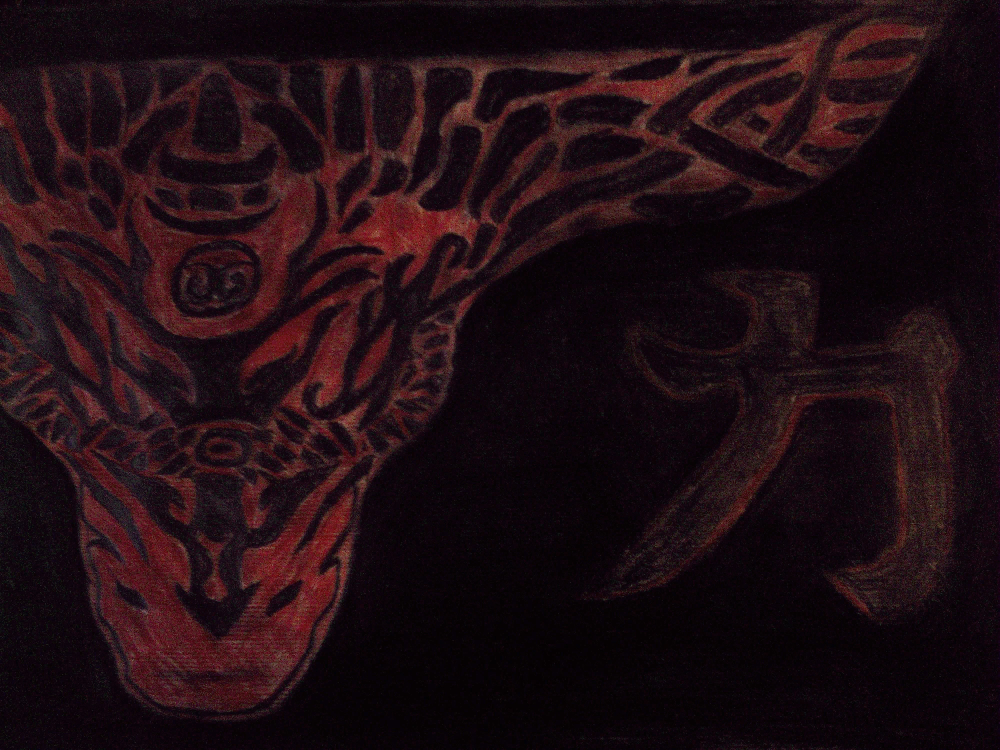
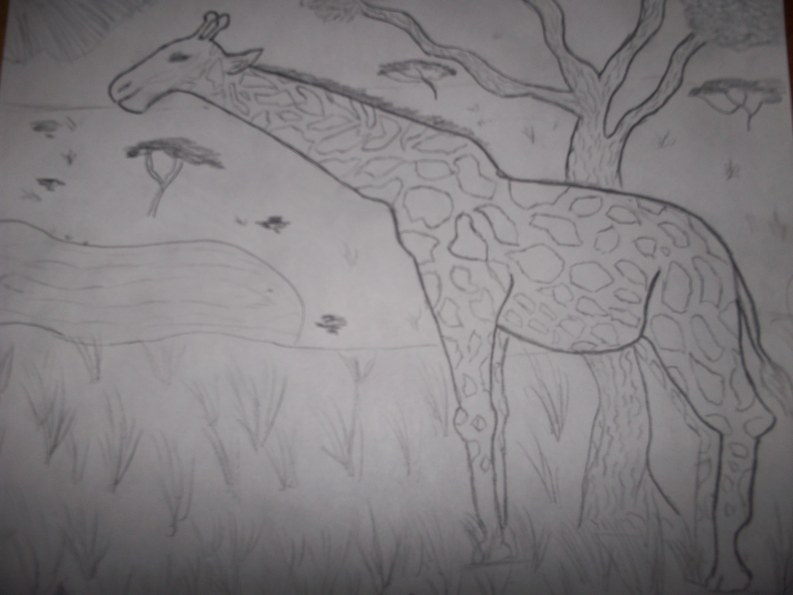
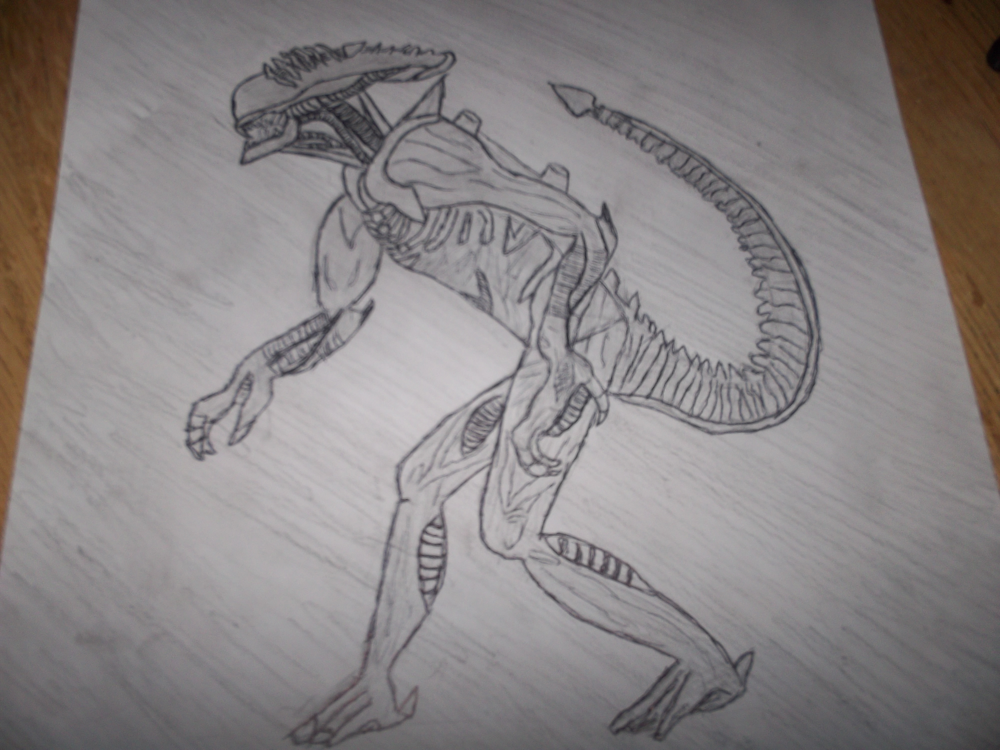

In the past I had a lot more time to myself, I drew a lot of artwork during my high school years. In recent years I have drawn less because I often have three hours plus to myself, but I still do try to draw every now and again. When I do draw I mostly make monsters and science fiction artwork but I have done a few pictures of animals as well.
The first picture on the left is a tribal style Bull with the chinese character for strength, I used charcoal to color in the bulk of the background and shapes that make up the bull, I then used colored pencil to fill in the rest of the piece.
The middle picture is one of the first pieces that I actually tried to draw well and not just doodle.
The final picture is a drawing of Alien from the movie Alien that I made for one of my high school friends
About Me Hobbies Dishes